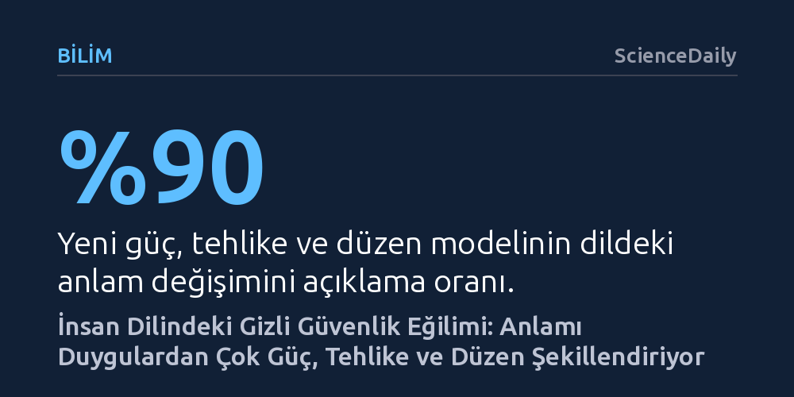

BILIM · ScienceDaily · 2026-10-25
Milyarlarca kelimelik analize dayanan yeni bir araştırma, dildeki anlamın duygulardan ziyade güç, tehlike ve düzen ekseninde kurulduğunu ortaya koydu. İnsanların tehlike yerine güvenliği anlatan kelimeleri açık farkla daha çok kullanması, dilin temelinde hayatta kalma güdüsünün yattığını gösteriyor.
İletişimimizin ve yapay zekânın temel aldığı duygusal dil kalıplarının ardında, aslında hayatta kalmaya odaklı derin bir güvenlik arayışı olduğunu gösterir.

Psikoloji ve dilbilim dünyası, 1950'lerden bu yana kelimelerin anlam haritasını Charles Osgood'un öncülüğünü yaptığı VAD (değerlik, uyarılma ve baskınlık) modeliyle açıklıyordu. Bu klasik kabule göre bir kelimenin zihnimizde uyandırdığı temel his; olumlu veya olumsuz oluşu, kişiyi heyecanlandırma ya da sakinleştirme düzeyi ve kontrol hissi yaratıp yaratmadığıyla ölçülüyordu. Duygu analizi algoritmalarından metin madenciliğine kadar sayısız alana temel oluşturan bu üç boyutlu çerçevenin, dilin özünü yansıtmaya yettiği varsayılıyordu.
Vermont Üniversitesi Karmaşık Sistemler Enstitüsü araştırmacılarının yürüttüğü kapsamlı çalışma, bu köklü teorinin insan dilinin derin yapısını gözden kaçırdığını ortaya koydu. İncelenen veriler, geleneksel modeldeki üç duygu boyutunun birbirinden bağımsız işlemediğini, dolayısıyla anlamın temel bileşenleri olamayacağını gösterdi. Araştırmacılara göre dilimizin zemininde duygulardan çok daha ilkel ve hayati üç eksen yer alıyor: güç, tehlike ve düzen.
Bilim insanları bu yeni yapıyı ortaya çıkarabilmek için "ousiyometri" adını verdikleri matematiksel bir ölçüm yaklaşımı geliştirdi. Yunanca "öz" anlamına gelen kavramdan esinlenen bu yöntem, edebiyat eserlerinden haber bültenlerine, sosyal medyadan radyo programı dökümlerine kadar uzanan devasa metin yığınlarında 20 binden fazla kelimenin milyarlarca kullanımını taradı. Geliştirilen analiz aracı, metinlerin ortalama anlam skorunu hızlıca hesaplayabilen ve anlatı boyunca anlamın nasıl dönüştüğünü bir protein zinciri gibi haritalandıran dinamik bir görselleştirme sundu.
Çalışmanın metodolojik açıdan en kritik adımı, kelimelerin sözlükteki varlığı (tip) ile gündelik dildeki fiili kullanım sıklıkları (belirteç) arasında yapılan ayrım oldu. Önceki araştırmalar her kelimeye eşit ağırlık vererek nadir ifadelerle sürekli tekrarlanan sözcükleri aynı kefeye koyuyordu. Vermont ekibi ise günlük hayatta milyonlarca kez yinelenen kelimelerin gerçek ağırlığını hesaba kattığında, klasik duygu modelinin anlam varyasyonunun yalnızca yüzde 72'sini açıkladığını; güç, tehlike ve düzen eksenlerinin ise yüzde 90'ın üzerinde bir uyum yakaladığını kanıtladı.
Araştırmanın en şaşırtıcı keşiflerinden biri, gündelik iletişimde güvenlikle ilişkili kelimelerin tehlike çağrıştıranlara kıyasla ezici bir sıklıkla tercih edilmesi oldu. Sosyal bilimlerde onlarca yıldır insanların olumsuzluk yerine olumluluğa yönelmesi "Pollyanna ilkesi" olarak adlandırılıyor ve genellikle iyimserlik veya pozitif iletişim arzusuyla açıklanıyordu. Ancak yeni bulgular, bu tercihin naif bir mutluluk arayışından değil, doğrudan tehditleri bertaraf etme ve öngörülebilirlik kurma refleksinden kaynaklandığını gösteriyor.
Dilbilimcilerin "iyilik" ya da "düşük saldırganlık" olarak kodladığı kelimelerin aslında güvenli ortamı temsil ettiği anlaşıldı. Araştırma ekibi bu durumu raporlarında çarpıcı bir saptamayla özetliyor: "Pollyanna ilkesinin pozitiflik eğilimi, aslında derindeki bir güvenlik eğiliminin tek boyutlu yansımasıdır." İnsanlar çevrelerini anlamlandırırken, başkalarıyla işbirliği kurarken veya belirsizlikle baş ederken kelimeleri birer güvenlik sinyali olarak kullanıyor. Konuşmalarımızın güvenliğe meyilli olması, atalarımızın hayatta kalmasını sağlayan evrimsel baskıların dile kazınmış izleri olabilir.
Dilin altında yatan bu gizli güvenlik mekanizması, özellikle metinleri duygusal tonuna göre ayrıştıran mevcut yapay zekâ sistemleri için büyük dönüşümler vadediyor. Günümüzün büyük dil modelleri ve otomatik içerik denetleme algoritmaları, metinleri çoğunlukla yüzeysel bir pozitif-negatif ikiliğinde değerlendiriyor. Anlamın güç, tehlike ve düzen eksenlerinde yeniden tanımlanması, yapay zekânın risk algısını, güven ilişkilerini ve karar alma süreçlerini insan zihnine çok daha yakın bir derinlikle kavramasına kapı açabilir.
Bulguların etkileri psikoloji ve nörobilime de uzanıyor. İnsan beyninin tehdit ve güvenlik işaretlerine karşı aşırı hassas olduğu uzun süredir biliniyordu; bu çalışmayla birlikte biyolojik öncelikler ile sembolik dil sistemi arasındaki köprü somutlaştı. Her ne kadar araştırmacılar evrimsel baskıların doğrudan bu dilsel yapıyı doğurduğunu kesin bir sebep-sonuç ilişkisiyle kanıtlamamış olsa da, anlam dünyamızın köklerinin duygulardan ziyade hayatta kalma mimarisinde yattığı fikri yeni bilimsel tartışmaları tetikleyecek güçte.